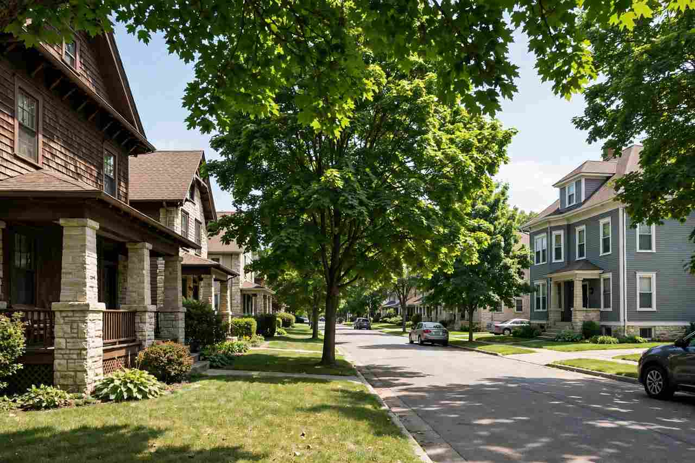

Rodent Control · Elwood, IN
Licensed Rodent Control in Elwood, IN
Murvo delivers same-day rodent control in Elwood for rats and mice in attics, walls, kitchens, and crawl spaces. Local crews start with a thorough inspection, then remove, exclude, and monitor until the problem is solved. You approve one flat-rate price in writing before any work starts, and every job carries a written guarantee across Madison County. From Point Isabel, Tipton, Frankton to every corner of Madison County, 1 ZIP codes are covered by local Murvo crews.
24/7Availability
1ZIP codes covered
Same-dayResponse
Licensed · Upfront options · Written guarantees · Fully insured
Elwood at a glance
Local Rodent Control for Elwood, IN.
Madison County
Countyeastern Indiana
RegionFishers · 23 mi
Nearest metro39 miles northeast of Indianapolis
From Indianapolis1
ZIP codes covered Service by service in Elwood
Rodent Control Services Available in Elwood
The full range of residential and commercial rodent services in Elwood and Madison County - built around the species and housing here, from emergency removal and same-day control to exclusion, proofing, trapping, cleanup, and damage repair. Every service below is quoted flat-rate in writing and backed by our workmanship guarantee.
- 01Rodent Control↗
- 02Rodent Inspection↗
- 03Rodent Removal↗
- 04Rodent Exclusion↗
- 05Rodent Proofing↗
- 06Rat Control↗
- 07Mice Control↗
- 08Mouse Removal↗
- 09Rat Removal↗
- 10Rodent Trapping↗
- 11Rodent Baiting↗
- 12Rodenticide Application↗
- 13Attic Rodent Removal↗
- 14Crawl Space Rodent Removal↗
- 15Wall Rodent Removal↗
- 16Kitchen Rodent Control↗
- 17Garage Rodent Control↗
- 18Commercial Rodent Control↗
- 19Residential Rodent Control↗
- 20Emergency Rodent Removal↗
- 21Same-Day Rodent Control↗
- 22Rodent Damage Repair↗
- 23Rodent Waste Cleanup↗
- 24Rodent Disinfection↗
- 25Rodent Odor Removal↗
- 26Dead Rodent Removal↗
- 27Rodent Dropping Cleanup↗
- 28Rodent Exclusion for Roofs↗
- 29Rodent Exclusion for Vents↗
- 30Rodent Exclusion for Chimneys↗
Rodent Control in Elwood
Rodent Control in Elwood
A single mouse sighting in an Elwood kitchen rarely means a single mouse. Rodents breed fast, contaminate food areas, and gnaw wiring long before the damage is obvious. Murvo responds with same-day appointments where available, a background-checked local crew, and a coordinated program of trapping, exclusion, cleanup guidance, and monitoring that keeps working after the first visit ends.
When you need rodent control in Elwood, the job starts with what is actually happening in your part of Madison County. Murvo crews work Elwood every week, so they know how Norway rat (Rattus norvegicus) and House mouse (Mus musculus) behave around vintage duplexes and stone homes, brick bungalows, older single-family homes, and farm and rural properties here - and where they get in: basement foundations, alley-facing garage doors, sewer laterals, and gaps around utility lines and sills. We arrive equipped for the full job, confirm the flat rate in writing before work begins, and cover the whole Elwood area, including Frankton, Hobbs. No call-center runaround and no open-ended hourly billing - just a local crew, a clear plan, and a written quote you approve first. The Elwood crews who handle rodent control also handle the follow-through - proofing, cleanup, and monitoring - so one visit can close the whole problem.
Our process follows five stages: Inspect, Remove, Exclude, Clean, and Monitor. Active animals are cleared with targeted trapping matched to the species, then openings around pipes, vents, and rooflines are sealed with copper mesh, hardware cloth, and metal flashing. Contaminated areas are cleaned safely, and monitoring visits confirm activity has stopped before we sign the job off. A technician first checks the attic, crawl space, garage, and kitchen, recording droppings, nests, gnaw marks, and entry gaps with photos. You approve every stage in advance, in writing.
Getting started takes one conversation, day or night, because our lines stay open 24/7. Work proceeds only after your approval, in stages you can follow, and a final walkthrough reviews every seal and every monitoring result before sign-off. We book a window that suits your household, confirm access needs in advance, and arrive prepared. Questions after sign-off are welcome at any hour, and the same written record helps any technician pick up your case immediately.
Need help quickly in Elwood? Call any time — the emergency line is staffed 24/7, and same-day rodent control appointments are available in most areas. We inspect first, explain the plan in plain language, and put the flat rate in writing before work starts. In Madison County, activity follows the local season, so timing the work matters as much as the method.
The honest answer is that it depends on species, activity level, and how much sealing your home needs, which is why Murvo inspects first and then gives you a flat-rate quote in writing. For national context only, Angi's 2026 data averages rat and mouse removal and control at $396, typically $189 to $655; that is not a Murvo price, and your written quote is the figure you pay.
Rodent Inspection in Elwood
Rodent Inspection in Elwood
You do not need to see a rodent to have a rodent problem in Elwood. Droppings in the attic, gnaw marks near basement foundations, alley-facing garage doors, sewer laterals, and gaps around utility lines and sills, or noises after dark are enough reason to book a rodent inspection. Murvo technicians check the whole property, photograph what they find, and give you a prioritized plan plus a flat-rate written quote for any work recommended.
Homeowners in Elwood call Murvo for rodent inspection because the problem here is specific: Norway rat (Rattus norvegicus) pressure around vintage duplexes and stone homes, brick bungalows, older single-family homes, and farm and rural properties, tight access at basement foundations, alley-facing garage doors, sewer laterals, and gaps around utility lines and sills, and activity that follows the local season. Our Madison County crews diagnose the real source before recommending work, explain the options in plain language, and quote one flat rate in writing. Across Elwood - including Frankton, Hobbs - every visit is backed by licensed, insured technicians and our written workmanship guarantee. The Elwood crews who handle rodent inspection also handle the follow-through - proofing, cleanup, and monitoring - so one visit can close the whole problem.
Timing often tells the story first. They check wiring and insulation for damage, test whether gaps at basement foundations, alley-facing garage doors, sewer laterals, and gaps around utility lines and sills are active, and mark each opening by size and species. The written report that follows ranks repairs clearly, so decisions rest on findings rather than guesswork or pressure. Noises at dusk suggest one pattern; droppings near stored food suggest another. Technicians use what you report to focus the search, then verify it against physical evidence throughout vintage duplexes and stone homes, brick bungalows, older single-family homes, and farm and rural properties. Each recommendation in that report traces back to a photographed finding, keeping the whole assessment accountable.
Your part is simple: point out noises, droppings, and any past problems. Before leaving, you walk through the evidence together, discuss priorities, and decide what happens next, with no obligation attached. Ours is everything else. A background-checked technician arrives on time, protects access areas, and inspects inside and out against a set checklist. If you decide to proceed, those findings become the working plan, so no second survey is needed before approved repairs begin.
You do not have to wait days for answers in Elwood. Same-day rodent inspection appointments are available in most areas, urgent calls are taken 24/7, and most home inspections take under an hour. You finish the visit with photos, written findings, and flat-rate pricing for anything we recommend. Around Elwood, vintage duplexes and stone homes, brick bungalows, older single-family homes, and farm and rural properties give rodents the most cover, which is why entry points get checked before traps are set.
Your exact rodent inspection price is confirmed before we visit, and any follow-up work is quoted as a flat rate in writing after the inspection — no hourly billing. For context, Angi's 2026 data puts a professional rodent inspection nationally at $100 to $200, often credited toward the job if you proceed.
Rodent Removal in Elwood
Rodent Removal in Elwood
Removal works best when it is species-specific. In Elwood, vintage duplexes and stone homes, brick bungalows, older single-family homes, and farm and rural properties give Norway rat (Rattus norvegicus) and House mouse (Mus musculus) warm voids, stored food, and quiet nesting corners reached through basement foundations, alley-facing garage doors, sewer laterals, and gaps around utility lines and sills. Our licensed, insured technicians assess numbers and access routes first, then set traps on proven runways and return on schedule until catches fall to zero and monitoring stays clear.
Homeowners in Elwood call Murvo for rodent removal because the problem here is specific: Norway rat (Rattus norvegicus) pressure around vintage duplexes and stone homes, brick bungalows, older single-family homes, and farm and rural properties, tight access at basement foundations, alley-facing garage doors, sewer laterals, and gaps around utility lines and sills, and activity that follows the local season. Our Madison County crews diagnose the real source before recommending work, explain the options in plain language, and quote one flat rate in writing. Across Elwood - including Frankton, Hobbs - every visit is backed by licensed, insured technicians and our written workmanship guarantee. In Elwood, rodent removal calls most often involve vintage duplexes and stone homes, brick bungalows, older single-family homes, and farm and rural properties, where basement foundations, alley-facing garage doors, sewer laterals, and gaps around utility lines and sills decide whether the fix holds.
Why trap first instead of reaching for poison? Because trapped animals can be counted, removed, and disposed of hygienically, while poisoned animals can die where nobody can reach them. Contaminated nesting material is bagged carefully, affected surfaces are disinfected before any cleaning, and dry sweeping of droppings is never used, since that spreads contamination into the air. Technicians therefore match traps to species and setting, work attics, voids, and kitchens in sequence, and retrieve any carcass promptly. The sequence ends with monitoring, because removal without a confirming check is a claim rather than a result.
Once you book rodent removal in Elwood, we agree a time window and your technician arrives with traps, protective equipment, and a clear plan. When catches reach zero, we walk through the results, discuss sealing, and confirm your written guarantee before closing the job. Progress is photographed and shared with you throughout the program. The first visit confirms activity and sets traps; return visits clear and reset them on schedule. Nothing is left unexplained.
For active infestations in Elwood, rodent removal can usually start the same day you call, and our team answers 24/7 when a rodent is loose in a living area. The first visit confirms activity and sets traps straight away; return visits then clear and reset them until monitoring shows the property is completely clear. If you are seeing signs now, an inspection this week is the fastest way to know which situation you are in.
Cost depends on the species, how many animals are active, and how much sealing the home needs afterwards, so Murvo inspects first and quotes one flat rate in writing. For national context only, Angi's 2026 data averages rat and mouse removal at $396, typically $189 to $655. That benchmark is not a Murvo price; your written quote is the exact figure.
Rodent Exclusion in Elwood
Rodent Exclusion in Elwood
Exclusion is also the safest long-term strategy for Elwood homes, because a sealed house needs far less bait and fewer repeat treatments. Murvo's licensed, insured crews finish roof, vent, and chimney work to weatherproof standards, walk every sealed opening with you afterwards, and back the result with a written workmanship guarantee you can hold us to.
When you need rodent exclusion in Elwood, the job starts with what is actually happening in your part of Madison County. Murvo crews work Elwood every week, so they know how Norway rat (Rattus norvegicus) and House mouse (Mus musculus) behave around vintage duplexes and stone homes, brick bungalows, older single-family homes, and farm and rural properties here - and where they get in: basement foundations, alley-facing garage doors, sewer laterals, and gaps around utility lines and sills. We arrive equipped for the full job, confirm the flat rate in writing before work begins, and cover the whole Elwood area, including Frankton, Hobbs. No call-center runaround and no open-ended hourly billing - just a local crew, a clear plan, and a written quote you approve first. Homes near Point Isabel tend to show activity first in Elwood, which is why inspections start with basement foundations, alley-facing garage doors, sewer laterals, and gaps around utility lines and sills.
The sequence matters as much as the materials. Photographs record every finished seal with its location, building a reference you keep. Because a properly sealed home needs far less ongoing treatment, exclusion also lowers long-term reliance on bait. A later monitoring check tests the work honestly, revisiting each sealed point for fresh rub marks, droppings, or gnawing. Active openings are closed first, inactive weaknesses next, and purely cosmetic gaps last, so protection arrives where pressure is highest. The final monitoring visit therefore matters as much as the sealing day itself, and its findings are shared.
After booking rodent exclusion in Elwood, your technician first surveys the whole exterior and confirms which openings are active. Follow-up monitoring is arranged, and every seal is covered by the written workmanship guarantee. You receive a flat-rate written quote listing each seal before work starts. Sealing is then completed opening by opening, photographed as we go, and finished with a walkthrough together. No opening is sealed without being shown to you first.
Rodent exclusion in Elwood usually starts with a survey visit we can often schedule the same day you call. Sealing itself is booked as soon as any active animals are cleared, because nothing is sealed inside. Most homes are fully sealed within days, not weeks, and urgent entry points near wiring or food areas are prioritized first. Around Elwood, vintage duplexes and stone homes, brick bungalows, older single-family homes, and farm and rural properties give rodents the most cover, which is why entry points get checked before traps are set.
After the survey of your Elwood home, every opening that needs sealing is listed and priced as one flat-rate written quote, so you pay only for the work your property needs. For national context, Angi's 2026 data puts basic exclusion at $200 to $600 depending on access and the number of openings; that benchmark is not a Murvo price.
Rodent Proofing in Elwood
Rodent Proofing in Elwood
When is the right season for rodent proofing in Elwood? Before cold weather sends rodents searching for indoor warmth, though any quiet month works well. Our licensed, insured technicians harden the structure, advise on food storage and vegetation, and leave a seasonal re-check booked, all backed by a written workmanship guarantee.
When you need rodent proofing in Elwood, the job starts with what is actually happening in your part of Madison County. Murvo crews work Elwood every week, so they know how Norway rat (Rattus norvegicus) and House mouse (Mus musculus) behave around vintage duplexes and stone homes, brick bungalows, older single-family homes, and farm and rural properties here - and where they get in: basement foundations, alley-facing garage doors, sewer laterals, and gaps around utility lines and sills. We arrive equipped for the full job, confirm the flat rate in writing before work begins, and cover the whole Elwood area, including Frankton, Hobbs. No call-center runaround and no open-ended hourly billing - just a local crew, a clear plan, and a written quote you approve first. Seasonal timing matters for rodent proofing in Elwood: rodents surge in Elwood from October through April.
Where proofing overlaps with structural exclusion, we use the same chew-resistant materials: copper mesh, hardware cloth, metal flashing, and durable sealants matched to each opening. The written plan distinguishes homeowner tasks from professional work, and seasonal re-checks after completion catch new gaps early, before they can turn into another indoor infestation for your household. Around kitchens, we coordinate sealing behind units and along pipe runs; in garages, we tackle stored-food and clutter harborage directly. That keeps protection current year after year.
After booking, we confirm your appointment and any access needs, such as gates or attic hatches. On the day, your background-checked technician completes the survey and agreed proofing work in one visit where possible. Before leaving, you walk the finished sealing together, receive care and storage advice, and confirm the guarantee. Later re-checks verify sweeps, screens, and seals are still holding. Nothing is added to your bill without approval first.
Proofing is planned work rather than an emergency, but you can still move fast: rodent proofing surveys in Elwood are often available the same day and always within a few days. Once you approve the plan, most work is finished in a single visit, ideally before colder weather drives rodents indoors. In Madison County, activity follows the local season, so timing the work matters as much as the method.
We survey your Elwood property first, separate the quick wins you can handle yourself from the specialist sealing, and quote the professional work as one flat rate in writing so spending can be staged. Angi's 2026 national context puts exclusion, the core of proofing, at $200 to $600 for basic work — a benchmark only, not a Murvo price.
Rat Control in Elwood
Rat Control in Elwood
Rats are cautious, strong, and destructive, and a Elwood sighting usually means a settled group is already traveling your fences, pipes, and rooflines nightly. Murvo's rat control identifies the species, maps those routes, and combines pre-baited trapping with removal and exclusion. You approve one flat-rate written quote before work starts, and monitoring continues until activity fully stops.
Homeowners in Elwood call Murvo for rat control because the problem here is specific: Norway rat (Rattus norvegicus) pressure around vintage duplexes and stone homes, brick bungalows, older single-family homes, and farm and rural properties, tight access at basement foundations, alley-facing garage doors, sewer laterals, and gaps around utility lines and sills, and activity that follows the local season. Our Madison County crews diagnose the real source before recommending work, explain the options in plain language, and quote one flat rate in writing. Across Elwood - including Frankton, Hobbs - every visit is backed by licensed, insured technicians and our written workmanship guarantee. In Elwood, rat control calls most often involve vintage duplexes and stone homes, brick bungalows, older single-family homes, and farm and rural properties, where basement foundations, alley-facing garage doors, sewer laterals, and gaps around utility lines and sills decide whether the fix holds.
Control starts with species and route identification, because roof rats and Norway rats behave and enter very differently. We then pair the program with roofline and entry-point exclusion, plus attic removal and cleanup where nests are found overhead. Technicians pre-bait unset traps along proven runways so wary rats feed confidently, then set them and return to check, clear, and adjust placements until activity stops. Trapped rats are removed hygienically, and each visit is documented with locations and counts. Progress is visible at every visit.
After booking, we confirm access to attics, basements, and outbuildings so the first visit is productive. Follow-up visits are booked ahead, trapped rats are removed promptly, and a final monitoring check verifies the result before sign-off under our written workmanship guarantee. On arrival, your background-checked technician walks the property with you, sets out the plan, and starts pre-baiting straight away once you approve the quote. You see documented progress at each visit.
Rats do not wait, and neither do we: rat control in Elwood can usually start with a same-day inspection, and urgent calls are answered 24/7. Pre-baiting begins on the first visit once you approve the written quote, traps are set as soon as rats are feeding confidently, and scheduled checks keep the program moving until activity stops. Around Elwood, vintage duplexes and stone homes, brick bungalows, older single-family homes, and farm and rural properties give rodents the most cover, which is why entry points get checked before traps are set.
Rat work varies with species, colony size, and how many entry points need sealing, so Murvo inspects first and quotes one flat rate in writing. For national context only, Angi's 2026 data averages rat control and removal at $396, typically $189 to $655. That benchmark is not a Murvo price; the written quote for your Elwood home is the exact figure you pay.
Mice Control in Elwood
Mice Control in Elwood
In vintage duplexes and stone homes, brick bungalows, older single-family homes, and farm and rural properties, mice think small, and control has to think smaller. A gap at basement foundations, alley-facing garage doors, sewer laterals, and gaps around utility lines and sills no wider than a pencil is an open door, and pipe runs become private highways across Madison County homes. Our technicians hunt those overlooked routes for House mouse (Mus musculus) activity, then combine trapping, sealing, and food-storage advice.
Homeowners in Elwood call Murvo for mice control because the problem here is specific: Norway rat (Rattus norvegicus) pressure around vintage duplexes and stone homes, brick bungalows, older single-family homes, and farm and rural properties, tight access at basement foundations, alley-facing garage doors, sewer laterals, and gaps around utility lines and sills, and activity that follows the local season. Our Madison County crews diagnose the real source before recommending work, explain the options in plain language, and quote one flat rate in writing. Across Elwood - including Frankton, Hobbs - every visit is backed by licensed, insured technicians and our written workmanship guarantee. In Elwood, mice control calls most often involve vintage duplexes and stone homes, brick bungalows, older single-family homes, and farm and rural properties, where basement foundations, alley-facing garage doors, sewer laterals, and gaps around utility lines and sills decide whether the fix holds.
Our integrated approach favors trapping and sealing over baits, with genuinely pet-safe options for family homes. Droppings in cabinets are never dry-swept; following CDC guidance, surfaces are disinfected first so contamination is not spread into the air, and nesting debris is bagged and removed. Food-storage advice removes the attraction that drew mice in, and sealing is completed as whole-home proofing so kitchens, attics, and voids stay clear after the program ends. Catch records show exactly how numbers fall each visit.
Book mice control in Elwood with one call, and same-day visits are available in many areas. Trap checks are scheduled before we leave, and a follow-up visit confirms activity has stopped before the job is signed off. Your technician surveys the kitchen, attic, and voids, explains where mice are traveling, and gives you a flat-rate written quote before setting a single trap. Everything is explained in plain language for your household.
Mice multiply fast, so mice control in Elwood is built to start fast too: a survey can often be arranged the same day you call, with traps set on that first visit once the quote is approved. Because mice investigate new objects quickly, catches usually begin soon after, and check visits follow until a final confirmation shows activity has stopped. That is also why Murvo pairs removal with exclusion in Elwood - treating the animal without closing basement foundations, alley-facing garage doors, sewer laterals, and gaps around utility lines and sills rarely lasts.
The number of rooms affected and the amount of sealing required set the price, so Murvo surveys first and quotes one flat rate in writing. For national context only, Angi's 2026 data averages rat and mouse control and removal at $396, typically $189 to $655 — not a Murvo price; your written quote is exact.
Mouse Removal in Elwood
Mouse Removal in Elwood
Most Elwood removal jobs begin in one room and end with evidence in three, because mice nest close to food and travel widely at night. Murvo surveys room by room, runs traps at every active site, and seals behind the work. The full program is one flat-rate written quote.
In Elwood, mouse removal is not a generic spray-and-go service. Rodents exploit basement foundations, alley-facing garage doors, sewer laterals, and gaps around utility lines and sills in vintage duplexes and stone homes, brick bungalows, older single-family homes, and farm and rural properties, and a fix that ignores those routes does not last. Murvo's Elwood team inspects first, shows you the evidence - droppings, gnaw marks, entry gaps - and then lays out the work with a flat-rate written quote. We serve all of Madison County from Elwood, including Frankton, Hobbs, and every job is covered by our written workmanship guarantee. Homes near Point Isabel tend to show activity first in Elwood, which is why inspections start with basement foundations, alley-facing garage doors, sewer laterals, and gaps around utility lines and sills.
Trap-based removal is the default here for practical reasons. Once activity ends, access points are sealed thoroughly, and advice on storage and scent-trail cleaning helps the kitchen stay clear. It is safer around children and pets, results are visible and countable, and no animal is left to die inside a hidden void. Cleanup follows the same care: droppings and nesting are never dry-swept, surfaces are disinfected first, and waste is bagged and removed hygienically. Monitoring after sealing confirms the finish, so the result rests on evidence rather than a hopeful guess.
For urgent mouse problems in Elwood, contact Murvo for a same-day response where available. Your technician surveys the home, explains the multi-trap plan, and confirms a flat-rate written quote before starting. Return visits are scheduled to clear and reset traps, and cleanup and sealing follow once catches reach zero. The final visit confirms the result and your written workmanship guarantee. You are updated after every visit, without ever chasing us.
In Elwood, mouse removal can often begin the same day you call, especially where mice are active in kitchens or living areas. The first visit surveys nesting sites and sets traps immediately after you approve the quote; because mice investigate traps quickly, catches usually start fast, and return visits continue until numbers reach zero. Murvo's Elwood crews explain the finding either way, and the flat-rate quote leaves the decision with you.
Rooms involved and sealing needed determine the cost of removal, so we survey first and agree a flat rate in writing before work begins. As national context only, Angi's 2026 data averages rat and mouse removal at $396, with a typical range of $189 to $655; that benchmark is not a Murvo price, and your written quote covers your exact program.
Rat Removal in Elwood
Rat Removal in Elwood
In vintage duplexes and stone homes, brick bungalows, older single-family homes, and farm and rural properties, where rats enter decides how removal unfolds. Roof-level access through basement foundations, alley-facing garage doors, sewer laterals, and gaps around utility lines and sills points toward attic work; ground burrows suggest basements and drains across Madison County. Our licensed technicians trace the whole route for Norway rat (Rattus norvegicus) and House mouse (Mus musculus), remove the colony, and sanitize areas where nests contaminated insulation or stored items.
Homeowners in Elwood call Murvo for rat removal because the problem here is specific: Norway rat (Rattus norvegicus) pressure around vintage duplexes and stone homes, brick bungalows, older single-family homes, and farm and rural properties, tight access at basement foundations, alley-facing garage doors, sewer laterals, and gaps around utility lines and sills, and activity that follows the local season. Our Madison County crews diagnose the real source before recommending work, explain the options in plain language, and quote one flat rate in writing. Across Elwood - including Frankton, Hobbs - every visit is backed by licensed, insured technicians and our written workmanship guarantee. Coverage for rat removal spans 1 ZIP codes in Madison County, including 46036.
We lead with trapping and exclusion in an integrated, pet-conscious approach, using locked bait stations only where genuinely justified and monitored on schedule. After clearance, contaminated insulation areas can be sanitized, and droppings are never dry-swept: following CDC guidance, surfaces are disinfected first before waste is removed. Monitoring devices and a final walkthrough then provide documented evidence that activity has ended, and ongoing proofing keeps drains, vents, and rooflines checked afterwards. That evidence is always shared with you in writing.
Book and we will agree a visit time, with same-day appointments for active infestations where available. Your technician assesses the colony, explains each stage, and confirms the written quote before pre-baiting begins. Repeat visits are scheduled in advance, progress is reported after each one, and sealing follows once catches stop and monitoring stays clear. Every visit is documented with counts and locations, so the final clearance rests on a complete record rather than a single quiet check.
Rats in a living area cannot wait for a routine slot. In Elwood, rat removal can usually start the same day you call and our line answers 24/7 for urgent cases. Pre-baiting starts on the first visit after you approve the written quote, traps are set once rats feed confidently — typically within days — and frequent returns run until monitoring confirms the colony is gone. Around Elwood, vintage duplexes and stone homes, brick bungalows, older single-family homes, and farm and rural properties give rodents the most cover, which is why entry points get checked before traps are set.
Rat removal pricing depends on colony size, access, and the sealing needed afterwards, so Murvo assesses your property first and quotes a flat rate in writing. For national context only, Angi's 2026 data averages rat removal at $396, typically $189 to $655. That is a benchmark, not a Murvo price, and your written quote covers the full program described.
Rodent Trapping in Elwood
Rodent Trapping in Elwood
Good trapping is species craft, not guesswork. In Elwood, wary Norway rat (Rattus norvegicus) need unset traps pre-baited for several days before they will feed confidently, while House mouse (Mus musculus) respond to clustered traps at activity hotspots. Our technicians match trap types and baits to the species and setting, from food lures in kitchens to robust devices for larger rats in basements.
In Elwood, rodent trapping is not a generic spray-and-go service. Rodents exploit basement foundations, alley-facing garage doors, sewer laterals, and gaps around utility lines and sills in vintage duplexes and stone homes, brick bungalows, older single-family homes, and farm and rural properties, and a fix that ignores those routes does not last. Murvo's Elwood team inspects first, shows you the evidence - droppings, gnaw marks, entry gaps - and then lays out the work with a flat-rate written quote. We serve all of Madison County from Elwood, including Frankton, Hobbs, and every job is covered by our written workmanship guarantee. Homes near Point Isabel tend to show activity first in Elwood, which is why inspections start with basement foundations, alley-facing garage doors, sewer laterals, and gaps around utility lines and sills.
Adjustment is where experience shows. Households receive a simple map of device locations and safety guidance for children and pets. As numbers fall toward zero, attention shifts to exclusion recommendations and cleanup, converting a trapping program into lasting protection. If catches cluster at one end of a runway, placements concentrate there; if a route goes quiet while another warms up, devices move accordingly. Baits are refreshed and matched to what the species is already eating nearby. Households can follow that adjustment process through the shared catch log, which records every change of position.
Between checks, leave devices untouched and note any new noises or droppings by room; that information sharpens the next visit. The program ends with a clear monitoring result, a written summary of what was caught where, and sealing advice. Your background-checked technician adjusts placements as the pattern changes and removes catches promptly and hygienically. The summary also notes which routes stayed busiest, information that makes any later exclusion work faster and more precisely targeted.
In Elwood, rodent trapping can usually start the same day you call, with traps placed or pre-baiting begun on the first visit after you approve the quote. Mice often investigate within the first night; wary rats need a few days of pre-baiting before traps are set. Scheduled check visits then keep catches moving until numbers reach zero. Murvo's Elwood crews explain the finding either way, and the flat-rate quote leaves the decision with you.
Trapping is usually quoted as part of a complete removal program rather than by the trap, and the price depends on species, activity level, and how many check visits are needed. Murvo inspects first and quotes one flat rate in writing covering the program and its check visits, so there are no per-visit surprises and no hourly billing at any stage.
Rodent Baiting in Elwood
Rodent Baiting in Elwood
Most Elwood baiting requests start with returning droppings outdoors, around garages, sheds, or fence lines. Murvo answers carefully: activity is mapped first, trapping and exclusion come first, and any stations used are locked and tamper-resistant. One flat-rate written quote covers placement, monitoring, and eventual removal of every station.
Homeowners in Elwood call Murvo for rodent baiting because the problem here is specific: Norway rat (Rattus norvegicus) pressure around vintage duplexes and stone homes, brick bungalows, older single-family homes, and farm and rural properties, tight access at basement foundations, alley-facing garage doors, sewer laterals, and gaps around utility lines and sills, and activity that follows the local season. Our Madison County crews diagnose the real source before recommending work, explain the options in plain language, and quote one flat rate in writing. Across Elwood - including Frankton, Hobbs - every visit is backed by licensed, insured technicians and our written workmanship guarantee. Coverage for rodent baiting spans 1 ZIP codes in Madison County, including 46036.
Where baiting is not appropriate indoors, we say so, and recommend trapping first followed by proofing of gaps around pipes, vents, and doors. Consumption records from each visit show whether activity is falling, holding, or moving, guiding whether stations stay, move, or come out entirely in favor of sealing and trapping alone. That exclusion-first approach reduces reliance on bait over time, which matters for households with children, pets, or visiting wildlife in Elwood. You receive those records after every monitoring visit.
After booking, we confirm a time window and talk through where pets play and children gather, so placement planning starts before we arrive. On the day, your background-checked technician inspects first, agrees each station location with you, and secures and labels every unit. Follow-up checks are booked ahead, consumption is reported to you, and the program ends with stations removed and sealing recommendations confirmed. Nothing is placed anywhere you have not approved.
Deliberate setup matters more than speed with rodent baiting, but the first step is still fast: an inspection in Elwood can often be arranged the same day you call. Stations are placed only after activity is mapped and you approve the written quote and each location, then monitoring runs on a fixed schedule until consumption stops and activity is confirmed clear. Around Elwood, vintage duplexes and stone homes, brick bungalows, older single-family homes, and farm and rural properties give rodents the most cover, which is why entry points get checked before traps are set.
How many locked stations your property needs and how long monitoring runs determine the cost, so Murvo inspects and maps activity first, then quotes one flat rate in writing covering placement and scheduled checks. There are no per-visit surprises, and because the approach is exclusion-first, the aim is to reduce and eventually remove stations rather than maintain them forever.
Rodenticide Application in Elwood
Rodenticide Application in Elwood
In vintage duplexes and stone homes, brick bungalows, older single-family homes, and farm and rural properties, product choice is only half the decision; placement and oversight matter just as much near basement foundations, alley-facing garage doors, sewer laterals, and gaps around utility lines and sills routes in Madison County. Licensed Murvo technicians use tamper-resistant locked stations exclusively, map and label every unit, record amounts at each visit, and retrieve accessible carcasses promptly to limit odor and secondary risks.
Homeowners in Elwood call Murvo for rodenticide application because the problem here is specific: Norway rat (Rattus norvegicus) pressure around vintage duplexes and stone homes, brick bungalows, older single-family homes, and farm and rural properties, tight access at basement foundations, alley-facing garage doors, sewer laterals, and gaps around utility lines and sills, and activity that follows the local season. Our Madison County crews diagnose the real source before recommending work, explain the options in plain language, and quote one flat rate in writing. Across Elwood - including Frankton, Hobbs - every visit is backed by licensed, insured technicians and our written workmanship guarantee. Homes near Point Isabel tend to show activity first in Elwood, which is why inspections start with basement foundations, alley-facing garage doors, sewer laterals, and gaps around utility lines and sills.
The first decision is whether application is justified, and often it is not. Where treatment is justified, stations are mapped, anchored, and labeled, products remain inside locked units at all times, and scheduled checks record amounts precisely. Monitoring data then governs whether treatment continues, changes, or stops in favor of proofing alone. Inspection confirms species and activity, then trapping and exclusion are weighed honestly; if those methods can solve the problem safely, they are recommended instead. If consumption patterns look unusual, technicians investigate rather than simply refilling, because unexpected patterns can signal a different species.
Start with the inspection, often bookable the same day, and expect alternatives explained before products are discussed. Your licensed technician confirms whether treatment is justified, reviews safety information with you, and provides the written quote. Application happens only after approval, with monitoring visits scheduled and a clear stopping point agreed in advance. You can pause or stop the program at any point, and stopping triggers removal of stations rather than leaving them behind unattended.
In Elwood, rodenticide application begins with an inspection we can often schedule the same day you call, because no responsible application happens without one. If treatment is justified and you approve the written quote, locked stations are installed on that visit. Monitoring then runs on schedule, and treatment stops as soon as data shows activity has ended. Around Elwood, vintage duplexes and stone homes, brick bungalows, older single-family homes, and farm and rural properties give rodents the most cover, which is why entry points get checked before traps are set.
Application cost depends on the number of locked stations, the product required under Indiana rules, and how long monitoring runs. Murvo inspects first, explains whether trapping or exclusion could avoid chemical control entirely, and then quotes one flat rate in writing before work begins. The quote covers scheduled monitoring visits, so there are no per-visit surprises later.
Attic Rodent Removal in Elwood
Attic Rodent Removal in Elwood
When chewed wiring appears overhead, treat it as urgent; damaged cables are a real fire risk. Murvo prioritizes those Elwood attics, clears animals with targeted trapping rather than poison, leaves monitoring briefly after sealing to confirm nothing remains inside, and backs the finished work with a written workmanship guarantee.
When you need attic rodent removal in Elwood, the job starts with what is actually happening in your part of Madison County. Murvo crews work Elwood every week, so they know how Norway rat (Rattus norvegicus) and House mouse (Mus musculus) behave around vintage duplexes and stone homes, brick bungalows, older single-family homes, and farm and rural properties here - and where they get in: basement foundations, alley-facing garage doors, sewer laterals, and gaps around utility lines and sills. We arrive equipped for the full job, confirm the flat rate in writing before work begins, and cover the whole Elwood area, including Frankton, Hobbs. No call-center runaround and no open-ended hourly billing - just a local crew, a clear plan, and a written quote you approve first. Coverage for attic rodent removal spans 1 ZIP codes in Madison County, including 46036.
Attic work divides into clearing, closing, and confirming. Confirming means monitoring traps left briefly after sealing, proving the space is empty. Photographs document conditions at each stage, including insulation damage and any wiring concerns found overhead. Clearing means targeted traps set where droppings and runways concentrate, checked on schedule until catches end. Closing means roofline exclusion: metal mesh and sealed flashing at eaves, vents, and junctions, plus advice on branches bridging animals onto the roof. Before-and-after photographs make that sequence visible, including exactly which roofline openings were open at the start.
Book attic rodent removal in Elwood and we will arrange an attic visit, same-day where chewed wiring or heavy activity makes it urgent. Trapping checks follow on schedule, sealing and cleanup complete the job, and monitoring confirms the attic stays clear under guarantee. Your technician inspects the attic and roofline, shows you photographs of the evidence, and confirms a flat-rate written quote before removal begins. You approve every stage before it happens.
Overhead scratching in Elwood often gets a same-day attic rodent removal visit, and attics with chewed wiring are prioritized because of the fire risk. Trapping starts on the first visit once you approve the written quote, checks run on schedule, and most attics are cleared and sealed within days. Monitoring stays in place briefly afterwards to confirm nothing remains inside. In Madison County, activity follows the local season, so timing the work matters as much as the method.
Activity levels, roofline sealing, and whether contaminated insulation needs cleanup all affect attic pricing, so Murvo inspects first and quotes one flat rate in writing for the removal program. Cleanup options are priced separately in writing before you decide, so nothing is added once work is underway.
Crawl Space Rodent Removal in Elwood
Crawl Space Rodent Removal in Elwood
Why avoid poison beneath a home? Pets can access crawl spaces, and carcasses hidden under a house are difficult to retrieve. Murvo favors trapping and physical exclusion instead, delivered by licensed, insured technicians who photograph every sealed opening, refit access panels securely, and confirm results with monitoring under a written guarantee.
Homeowners in Elwood call Murvo for crawl space rodent removal because the problem here is specific: Norway rat (Rattus norvegicus) pressure around vintage duplexes and stone homes, brick bungalows, older single-family homes, and farm and rural properties, tight access at basement foundations, alley-facing garage doors, sewer laterals, and gaps around utility lines and sills, and activity that follows the local season. Our Madison County crews diagnose the real source before recommending work, explain the options in plain language, and quote one flat rate in writing. Across Elwood - including Frankton, Hobbs - every visit is backed by licensed, insured technicians and our written workmanship guarantee. In Elwood, crawl space rodent removal calls most often involve vintage duplexes and stone homes, brick bungalows, older single-family homes, and farm and rural properties, where basement foundations, alley-facing garage doors, sewer laterals, and gaps around utility lines and sills decide whether the fix holds.
Cleanup beneath a home follows careful practice throughout. Droppings and nesting debris are never dry-swept, since disturbing them can spread contamination; surfaces are disinfected first, then waste is bagged and removed by technicians wearing protective equipment. Technicians also trace connections upward through wall voids, checking whether activity reaches the attic, and report moisture issues with practical recommendations. Photographs of every finished seal accompany your guarantee paperwork, creating a record of exactly what was closed. Vent and pier sealing is checked from inside the space, not assumed sound from a glance outside.
Before the visit, unlock crawl-space access and mention any known leaks or standing water. Sign-off includes a walkthrough of the documented results, photographs of finished sealing, and your guarantee confirmed in writing for the completed work. Your background-checked technician inspects with protective equipment, sets traps at active areas after approval, and books follow-up visits ahead. Moisture findings are included in the closing notes, since fixing leaks and standing water lowers rodent pressure long after removal ends.
For crawl space rodent removal in Elwood, inspections are usually arranged within a few days — and sooner when odors are drifting into living areas or activity sounds heavy. Trapping begins on the first visit after you approve the written quote, clearance and sealing follow in sequence, and monitoring stays in place until the space below is confirmed quiet. Around Elwood, vintage duplexes and stone homes, brick bungalows, older single-family homes, and farm and rural properties give rodents the most cover, which is why entry points get checked before traps are set.
Crawl-space costs depend on access, how many vents and gaps need sealing, and whether waste cleanup is required, so Murvo inspects first and quotes one flat rate in writing. If extra vents need sealing within the agreed scope, there are no surprises, and cleanup options are priced in writing before you decide whether to include them.
Wall Rodent Removal in Elwood
Wall Rodent Removal in Elwood
Wall voids are hidden highways through vintage duplexes and stone homes, brick bungalows, older single-family homes, and farm and rural properties in Elwood: mice travel them between kitchens and attics, and rats use them to reach food unseen via basement foundations, alley-facing garage doors, sewer laterals, and gaps around utility lines and sills. Our technicians carry inspection cameras for accessible voids, helping locate nests without opening large sections of drywall. If an animal has already died in the wall, retrieval and sanitation are handled too.
When you need wall rodent removal in Elwood, the job starts with what is actually happening in your part of Madison County. Murvo crews work Elwood every week, so they know how Norway rat (Rattus norvegicus) and House mouse (Mus musculus) behave around vintage duplexes and stone homes, brick bungalows, older single-family homes, and farm and rural properties here - and where they get in: basement foundations, alley-facing garage doors, sewer laterals, and gaps around utility lines and sills. We arrive equipped for the full job, confirm the flat rate in writing before work begins, and cover the whole Elwood area, including Frankton, Hobbs. No call-center runaround and no open-ended hourly billing - just a local crew, a clear plan, and a written quote you approve first. In Elwood, wall rodent removal calls most often involve vintage duplexes and stone homes, brick bungalows, older single-family homes, and farm and rural properties, where basement foundations, alley-facing garage doors, sewer laterals, and gaps around utility lines and sills decide whether the fix holds.
Once the void is clear, the route gets closed and the space made safe. Baseboard and pipe gaps linked to kitchen activity are sealed as part of wider proofing. If a rodent has died inside, retrieval is followed by sanitation: contaminated material is never dry-swept, surfaces are disinfected first, and odor treatment discourages new animals from investigating. Monitoring at key access points and repeat quiet-wall checks then confirm silence before any minimal, agreed access cut is made good. Only then is the job closed, with the monitoring record and any sanitation work documented for you.
Call and tell us when the noises happen; timing is genuinely useful evidence for locating the void. We schedule a locating visit, often the same day for persistent noise. Your technician traces the activity, explains precisely where the animal travels, and confirms the written quote before trapping or any agreed access work begins. Any agreed access cut is photographed before and after, made good neatly, and recorded so you know exactly what was opened.
In Elwood, wall rodent removal locating visits are often available the same day you call, especially for persistent scratching keeping you awake. Trapping is set at access points on that first visit once you approve the written quote, and because rodents travel the void nightly, results usually follow within days, confirmed by quiet-wall checks before we sign off. An Elwood inspection confirms it on site - dropping size, gnaw marks, and entry points tell the story quickly.
Wall work pricing depends on how precisely activity can be located and whether a minimal access cut is needed, which is why Murvo locates the activity first and quotes a flat rate in writing. That way wall access work never becomes an open-ended bill, and the quote covers the trapping, sealing, and monitoring described in your plan.
Kitchen Rodent Control in Elwood
Kitchen Rodent Control in Elwood
Droppings in cabinets, gnawed packaging or grease marks along the kickboards mean Norway rat (Rattus norvegicus) or House mouse (Mus musculus) are feeding where your family eats. Our kitchen rodent control in Elwood removes rodents safely, seals gaps behind appliances and pipes, and helps keep food preparation areas clean, hygienic and properly protected.
When you need kitchen rodent control in Elwood, the job starts with what is actually happening in your part of Madison County. Murvo crews work Elwood every week, so they know how Norway rat (Rattus norvegicus) and House mouse (Mus musculus) behave around vintage duplexes and stone homes, brick bungalows, older single-family homes, and farm and rural properties here - and where they get in: basement foundations, alley-facing garage doors, sewer laterals, and gaps around utility lines and sills. We arrive equipped for the full job, confirm the flat rate in writing before work begins, and cover the whole Elwood area, including Frankton, Hobbs. No call-center runaround and no open-ended hourly billing - just a local crew, a clear plan, and a written quote you approve first. Homes near Point Isabel tend to show activity first in Elwood, which is why inspections start with basement foundations, alley-facing garage doors, sewer laterals, and gaps around utility lines and sills.
In tricky cases we use nighttime trail cameras to pinpoint exactly which gap a cautious mouse is traveling through. The process combines targeted trapping, sealing of pipe, cabinet and kickboard gaps, disinfection guidance for contaminated food areas, and follow-up monitoring visits. Everything follows integrated pest management: remove the animals, block the routes, take away the food and water drawing them in. That combination, rather than a single treatment, is what keeps kitchens in Elwood rodent-free. The same careful standard applies on every single visit.
When you book, we agree an arrival window and any access needs around appliances. On site, inspection comes first, then your written quote and plan. Approved work covers removal, sealing and disinfection, carried out by licensed and insured technicians. Afterwards we monitor, report what we find at each visit, and only close the job when activity has stopped. The guarantee on the work is provided in writing. Your technician explains each visit before leaving the property.
You can reach us by phone 24/7, and reports of droppings close to food preparation surfaces are given priority when we schedule. A same-day visit in Elwood may be possible in many cases, depending on technician availability. When you call, tell us what you found and we will offer the earliest appointment available. In Madison County, most cases involve the Norway rat (Rattus norvegicus) and the House mouse (Mus musculus), so the inspection focuses on their routes first.
Cost depends on how many rodents are active, where they are entering, and how much sealing and cleanup the kitchen needs. Murvo inspects first, then gives one flat-rate written quote covering trapping, sealing and follow-up monitoring, with no hourly billing or add-on surprises. You approve the full price before any work begins, and the quote is backed by our written workmanship guarantee.
Garage Rodent Control in Elwood
Garage Rodent Control in Elwood
Garages give Norway rat (Rattus norvegicus) and House mouse (Mus musculus) shelter, stored food and a quiet route into the house, especially through gaps under the door. Our garage rodent control in Elwood removes rodents, seals door and wall entry points, and protects stored belongings, vehicles and wiring from gnaw damage. That is the standard Murvo works to in Indiana.
In Elwood, garage rodent control is not a generic spray-and-go service. Rodents exploit basement foundations, alley-facing garage doors, sewer laterals, and gaps around utility lines and sills in vintage duplexes and stone homes, brick bungalows, older single-family homes, and farm and rural properties, and a fix that ignores those routes does not last. Murvo's Elwood team inspects first, shows you the evidence - droppings, gnaw marks, entry gaps - and then lays out the work with a flat-rate written quote. We serve all of Madison County from Elwood, including Frankton, Hobbs, and every job is covered by our written workmanship guarantee. The Elwood crews who handle garage rodent control also handle the follow-through - proofing, cleanup, and monitoring - so one visit can close the whole problem.
Inspection covers the garage door seal, corners, wall plates, stored boxes, pet food and bird seed, plus any holes where pipes or cables pass into the house. Monitoring checks confirm activity has stopped before we finish. We identify the species from droppings and gnaw marks, set traps along the runways rodents actually use, and remove nesting material safely. Entry points are then sealed with gnaw-resistant materials, the door bottom is proofed, and we advise on raised, sealed storage. Materials are chosen for durability, not the cheapest quick fix.
Share a few details when you book: what you found, where, and whether vehicles need moving. Trapping, nest clearing and sealing then proceed in order. At the visit, the technician walks the garage with you, confirms entry points, and provides the full price in writing before starting. Return visits check monitors and traps, and the job wraps up only when checks show no continuing activity around doors, walls or stored items inside the garage.
Our phones are answered 24/7, and garages with active nesting, damaged wiring or movement into the house are treated as urgent. Depending on technician schedules, a same-day appointment in Elwood is often possible. Describe the signs when you call and we will offer the earliest visit we can arrange. Murvo's Elwood crews explain the finding either way, and the flat-rate quote leaves the decision with you.
As a national benchmark, Angi's 2026 data shows rat extermination ranging from $189-$655, with an average of $396; that is context only, not a Murvo price. Garage work varies with size, activity and the proofing doors and walls require. After inspecting, Murvo quotes one flat rate in writing for trapping, nest removal, sealing and monitoring, for your approval before anything starts.
Commercial Rodent Control in Elwood
Commercial Rodent Control in Elwood
Loading doors rarely close perfectly, and bin stores rarely stay clean for long. Those two facts explain much commercial rodent pressure in Madison County. Our commercial rodent control in Elwood tackles docks, waste areas, kitchens and storage together, with scheduled monitoring and written reports that show managers exactly what changed between every single visit.
Homeowners in Elwood call Murvo for commercial rodent control because the problem here is specific: Norway rat (Rattus norvegicus) pressure around vintage duplexes and stone homes, brick bungalows, older single-family homes, and farm and rural properties, tight access at basement foundations, alley-facing garage doors, sewer laterals, and gaps around utility lines and sills, and activity that follows the local season. Our Madison County crews diagnose the real source before recommending work, explain the options in plain language, and quote one flat rate in writing. Across Elwood - including Frankton, Hobbs - every visit is backed by licensed, insured technicians and our written workmanship guarantee. Seasonal timing matters for commercial rodent control in Elwood: rodents surge in Elwood from October through April.
For food premises the rules are strict: exclusion and hygiene first, locked stations only, complete records for every product used, and integrated pest management throughout. Contracts can cover a single site or multiple locations, with consistent reporting formats that make group compliance reviews straightforward for managers, auditors and environmental health officers alike. We assess waste handling, deliveries, storage and building fabric, then combine trapping, monitoring and proofing into one documented program. The same careful standard applies on every single visit.
Booking starts with a site survey, not a sales pitch. Each visit ends with a written service report. Regular reviews check trend data together, and our written workmanship guarantee covers the exclusion work we install. We inspect, document the risks, and quote in writing, so you know exactly what the program covers. Technicians then carry out removal and exclusion work around your hours, keeping customers unaware of any disruption. Nothing starts until you have approved the written quote.
Our commercial lines are open 24/7, and live sightings during trading hours are treated as emergencies and handled discreetly. Response in Elwood depends on technician availability, but we will always offer the earliest visit we can and advise on immediate steps to protect stock, customers and your audit position. If you are seeing signs now, an inspection this week is the fastest way to know which situation you are in.
For wider context, Angi's 2026 figures put rat extermination at $189-$655, averaging $396 nationally, though commercial sites are scoped individually and those figures are not Murvo prices. Site size, sector, activity and the exclusion and monitoring required all shape the cost. Murvo surveys first, then quotes a flat rate in writing for initial work or a clear scheduled-service price for an ongoing program, with reports included for your audit file.
Residential Rodent Control in Elwood
Residential Rodent Control in Elwood
Murvo is a rodent-only specialist, and homes are where that focus counts most. In Elwood we inspect attics, crawl spaces, garages and kitchens as one connected system, then remove, exclude, clean and monitor. You approve a flat-rate written quote before any work begins. It is a complete service, not a quick spray.
In Elwood, residential rodent control is not a generic spray-and-go service. Rodents exploit basement foundations, alley-facing garage doors, sewer laterals, and gaps around utility lines and sills in vintage duplexes and stone homes, brick bungalows, older single-family homes, and farm and rural properties, and a fix that ignores those routes does not last. Murvo's Elwood team inspects first, shows you the evidence - droppings, gnaw marks, entry gaps - and then lays out the work with a flat-rate written quote. We serve all of Madison County from Elwood, including Frankton, Hobbs, and every job is covered by our written workmanship guarantee. Homes near Point Isabel tend to show activity first in Elwood, which is why inspections start with basement foundations, alley-facing garage doors, sewer laterals, and gaps around utility lines and sills.
We treat the home as a system, because rodents rarely stay in one room. Technicians trace routes between roof, walls, garage and kitchen, set traps along real runways, and seal entry points with durable, gnaw-resistant materials once animals are out. Contaminated nesting material is removed safely and affected areas disinfected. Advice on food storage, pet food and garden attractants is included, so the conditions that drew rodents in are removed alongside the rodents themselves. Your technician explains each stage as the work progresses.
Book a visit and tell us about pets, children and where signs appeared. After approval, removal, sealing and cleaning proceed in a sensible sequence. We return for scheduled checks, share what each check shows, and finish only when monitoring confirms the home is clear. Your technician inspects the property, talks through what was found without jargon, and quotes the complete plan in writing. Prevention notes tailored to your layout are left with you at the end.
You can call us 24/7, and homes where rodents are in living areas, kitchens or children's bedrooms are prioritized in scheduling. A same-day visit in Elwood is often possible, subject to technician availability. Share what you have seen or heard and we will offer the earliest appointment available, plus advice for the meantime. The written quote for your Elwood property will spell out exactly which of these applies before any work starts.
Nationally, Angi's 2026 figures show rat extermination at $189-$655, averaging $396, but those are not Murvo prices for your home. Species, how established activity is, and the exclusion and cleanup needed determine the actual scope. Murvo inspects first and then gives one flat-rate written quote covering removal, sealing, cleaning and monitoring, with no hourly charges, for your approval before work begins.
Emergency Rodent Removal in Elwood
Emergency Rodent Removal in Elwood
Panic is a normal reaction to a rat in the kitchen. Take a breath, keep people and pets back, and call us. In Elwood, our emergency team assesses the risk first, removes the animal, checks for others nearby, and secures the opening it used, so one frightening night does not become a longer problem.
In Elwood, emergency rodent removal is not a generic spray-and-go service. Rodents exploit basement foundations, alley-facing garage doors, sewer laterals, and gaps around utility lines and sills in vintage duplexes and stone homes, brick bungalows, older single-family homes, and farm and rural properties, and a fix that ignores those routes does not last. Murvo's Elwood team inspects first, shows you the evidence - droppings, gnaw marks, entry gaps - and then lays out the work with a flat-rate written quote. We serve all of Madison County from Elwood, including Frankton, Hobbs, and every job is covered by our written workmanship guarantee. Around Point Isabel, Tipton, Frankton, the pattern is similar: House mouse (Mus musculus) finds basement foundations, alley-facing garage doors, sewer laterals, and gaps around utility lines and sills first, and lasting emergency rodent removal has to close those routes.
Emergency work starts with a focused assessment: where the animal is, how it got in, and whether more are present. Entry points are secured, droppings disinfected safely, and monitoring set so any remaining activity is caught quickly rather than discovered days later. Technicians remove rodents using targeted trapping or direct removal methods suited to the location, checking wall voids, attics and kitchens for further activity. Immediate risks such as chewed wiring or contaminated food areas are flagged straight away. Nothing is left to guesswork at any stage.
Booking an emergency visit takes one call to our 24/7 line. We then monitor and return as agreed until activity stops. Every stage is documented, and the completed work is covered by our written workmanship guarantee. Your technician arrives as arranged, assesses the situation calmly, and explains the plan and written flat-rate price before starting. Rodents are removed, entry points secured and contaminated areas treated. Nothing starts until you have approved the written quote.
Our lines are open 24/7, every day, and emergency calls in Elwood are triaged by risk, with live rodents in living areas, food contamination and chewed wiring prioritized. We will offer the earliest visit our technicians can reach and talk you through simple steps to keep everyone safe until we arrive. Murvo's Elwood crews explain the finding either way, and the flat-rate quote leaves the decision with you.
Emergency pricing depends on where the rodents are, how many are involved, and what securing, cleanup or follow-up the property needs. Murvo inspects on arrival and quotes one flat rate in writing before work starts, with no hourly billing, even for urgent callouts. You approve the price first, and the work is backed by our written workmanship guarantee.
Same-Day Rodent Control in Elwood
Same-Day Rodent Control in Elwood
Whether it is Norway rat (Rattus norvegicus) in the attic or House mouse (Mus musculus) under the sink, acting today stops breeding, damage and contamination getting worse. Our same-day rodent control in Elwood gets a technician out as quickly as schedules allow, then follows through with proofing, cleanup and monitoring until activity ends.
When you need same-day rodent control in Elwood, the job starts with what is actually happening in your part of Madison County. Murvo crews work Elwood every week, so they know how Norway rat (Rattus norvegicus) and House mouse (Mus musculus) behave around vintage duplexes and stone homes, brick bungalows, older single-family homes, and farm and rural properties here - and where they get in: basement foundations, alley-facing garage doors, sewer laterals, and gaps around utility lines and sills. We arrive equipped for the full job, confirm the flat rate in writing before work begins, and cover the whole Elwood area, including Frankton, Hobbs. No call-center runaround and no open-ended hourly billing - just a local crew, a clear plan, and a written quote you approve first. Seasonal timing matters for same-day rodent control in Elwood: rodents surge in Elwood from October through April.
A same-day visit still follows the full Inspect, Remove, Exclude, Clean and Monitor sequence. Sealing is planned or completed depending on scope, contaminated areas are disinfected, and monitoring is booked before we leave. You know exactly what has been done today and what happens next, in writing. Inspection identifies species, activity levels and entry points such as basement foundations, alley-facing garage doors, sewer laterals, and gaps around utility lines and sills. Traps are set along real runways the same visit, positioned safely around children and pets. Materials are chosen for durability, not the cheapest quick fix.
Call today and we will offer the earliest same-day appointment available in your area. Monitoring visits follow until activity stops. All work is carried out by licensed, insured technicians and backed by our written workmanship guarantee. Your technician arrives in the agreed window, inspects the property and quotes one flat rate in writing. Once approved, trapping starts straight away and sealing is planned or completed. We leave the area tidy when the work finishes.
Calling early in the day gives the best chance of a same-day appointment in Elwood, subject to technician availability, and our lines are open 24/7. If today is fully booked, we will offer the next available visit instead. We will also suggest simple precautions you can take in the meantime. If you are seeing signs now, an inspection this week is the fastest way to know which situation you are in.
Same-day work is priced the same fair way as any Murvo job: inspection first, then one flat-rate written quote based on species, activity levels and the exclusion and cleanup needed. There is no hourly billing and no premium surprise for speed. You approve the full price before treatment begins, and the work is backed by our written workmanship guarantee.
Rodent Damage Repair in Elwood
Rodent Damage Repair in Elwood
Repair only makes sense once rodents are gone and excluded. In Elwood Murvo sequences removal, exclusion and repair as one plan, quoted as a flat-rate written quote before work starts, covering gnawed materials, damaged insulation and the holes rodents made getting in. Call Murvo today for straightforward help.
In Elwood, rodent damage repair is not a generic spray-and-go service. Rodents exploit basement foundations, alley-facing garage doors, sewer laterals, and gaps around utility lines and sills in vintage duplexes and stone homes, brick bungalows, older single-family homes, and farm and rural properties, and a fix that ignores those routes does not last. Murvo's Elwood team inspects first, shows you the evidence - droppings, gnaw marks, entry gaps - and then lays out the work with a flat-rate written quote. We serve all of Madison County from Elwood, including Frankton, Hobbs, and every job is covered by our written workmanship guarantee. Coverage for rodent damage repair spans 1 ZIP codes in Madison County, including 46036.
Repair work follows the evidence from our inspection and your removal plan. Technicians remove nesting and contaminated debris safely, disinfect affected surfaces, and repair the entry damage rodents caused, from pipe holes to door edges. Where rodents have damaged stored belongings, wiring looms or ducting, we explain options honestly before any cost is agreed. The finished repair is checked against the exclusion work, so repaired areas are also proofed areas, not fresh invitations for the next rodents. The same careful standard applies on every single visit.
One call arranges the assessment alongside your removal plan. On site, we separate urgent safety issues from cosmetic marks, explain the difference, and confirm the full price in writing before starting. Work proceeds in a clean order: safe clearing, disinfection, repair, then proofing. Technicians tidy as they go and keep you updated at each stage. At the end, a joint check confirms the repairs match the written scope you approved at the beginning of the job.
You can reach us by phone 24/7, and urgent safety concerns in Elwood, such as chewed wiring, are prioritized for assessment. Repair itself is scheduled once removal and exclusion are under way, so active rodents do not undo the work. Call, describe the damage you can see, and we will arrange the earliest suitable visit. That is also why Murvo pairs removal with exclusion in Elwood - treating the animal without closing basement foundations, alley-facing garage doors, sewer laterals, and gaps around utility lines and sills rarely lasts.
Repair costs depend on how much material is damaged, whether insulation needs replacing, and how many entry points require repair and proofing. Murvo assesses first and quotes one flat rate in writing for the agreed scope, with no hourly billing. You see exactly what is included before approving, and the completed repairs are backed by our written workmanship guarantee.
Rodent Waste Cleanup in Elwood
Rodent Waste Cleanup in Elwood
Cleanup only works once rodents are gone and entry points sealed, otherwise waste simply builds up again. In Elwood we coordinate rodent waste cleanup with removal and exclusion as one plan, disinfecting surfaces twice and leaving the space clean, sanitised and safe for your family again. Help is available around the clock, every day.
When you need rodent waste cleanup in Elwood, the job starts with what is actually happening in your part of Madison County. Murvo crews work Elwood every week, so they know how Norway rat (Rattus norvegicus) and House mouse (Mus musculus) behave around vintage duplexes and stone homes, brick bungalows, older single-family homes, and farm and rural properties here - and where they get in: basement foundations, alley-facing garage doors, sewer laterals, and gaps around utility lines and sills. We arrive equipped for the full job, confirm the flat rate in writing before work begins, and cover the whole Elwood area, including Frankton, Hobbs. No call-center runaround and no open-ended hourly billing - just a local crew, a clear plan, and a written quote you approve first. The Elwood crews who handle rodent waste cleanup also handle the follow-through - proofing, cleanup, and monitoring - so one visit can close the whole problem.
Order matters with contaminated material, and CDC guidance sets that order. Bagged waste leaves sealed. First, the space is ventilated with nobody else inside. Next, droppings, nesting and soiled insulation are soaked with disinfectant and left to sit for the required time. Technicians in gloves, respirators and protective clothing then remove everything by hand; nothing is ever dry-swept or vacuumed, since that can aerosolize harmful particles. Finally, hard surfaces are washed and disinfected again, and we confirm when the area can be entered safely.
One call books a safe assessment. Cleanup then proceeds in the safe order, with contaminated material bagged and removed and surfaces disinfected twice. Follow-up checks link with your exclusion and monitoring plan. We only close the job when the space is clean, sanitised and safe to reoccupy. On arrival the technician inspects without disturbing dry waste, explains the plan, and gives a written flat-rate price. Questions are answered honestly throughout, with findings in writing.
We answer 24/7 and prioritize heavy contamination in living areas, especially where children or pets are present. Availability in Elwood depends on technician schedules, but we will offer the earliest visit we can. Meanwhile, keep people and pets out of the area, ventilate if safe, and never dry-sweep or vacuum droppings. In Madison County, most cases involve the Norway rat (Rattus norvegicus) and the House mouse (Mus musculus), so the inspection focuses on their routes first.
For national context, Angi's 2026 figures put rat extermination typically at $189-$655, averaging $396, though cleanup itself scales with how much contaminated material must be removed. Those are national figures, not Murvo prices. Murvo assesses the volume and location first, then quotes one flat rate in writing, so you approve the full cleanup cost before work begins.
Rodent Disinfection in Elwood
Rodent Disinfection in Elwood
Clean-looking is not the same as sanitized. Even after droppings are cleared, urine trails and bacteria can remain on beams, boards and stored items. Murvo's rodent disinfection in Elwood treats those hidden traces where rodents lived and traveled, with a flat-rate written quote provided before any application work begins at your property.
When you need rodent disinfection in Elwood, the job starts with what is actually happening in your part of Madison County. Murvo crews work Elwood every week, so they know how Norway rat (Rattus norvegicus) and House mouse (Mus musculus) behave around vintage duplexes and stone homes, brick bungalows, older single-family homes, and farm and rural properties here - and where they get in: basement foundations, alley-facing garage doors, sewer laterals, and gaps around utility lines and sills. We arrive equipped for the full job, confirm the flat rate in writing before work begins, and cover the whole Elwood area, including Frankton, Hobbs. No call-center runaround and no open-ended hourly billing - just a local crew, a clear plan, and a written quote you approve first. Around Point Isabel, Tipton, Frankton, the pattern is similar: House mouse (Mus musculus) finds basement foundations, alley-facing garage doors, sewer laterals, and gaps around utility lines and sills first, and lasting rodent disinfection has to close those routes.
Treatment begins where contamination concentrates, guided by the inspection map of nesting sites, dropping points and urine trails. Following CDC cleanup principles, areas are ventilated first and any remaining deposits are soaked with disinfectant rather than disturbed dry; nothing is dry-swept or vacuumed, and technicians wear gloves and respiratory protection throughout. Disinfectant is then applied across the affected surfaces and left for its full dwell time. After drying, we check the treated zones and confirm which rooms, attics or storage areas are ready for normal use again.
When you book, tell us where activity was found: attic, kitchen voids, garage or crawl space. Disinfectant is applied thoroughly, left to work, and surfaces are checked before we finish. You receive clear aftercare advice, and the completed treatment is covered by our written workmanship guarantee. Your technician plans the treatment areas, quotes in writing, and starts only with your approval. Your technician explains each visit before leaving the property.
Treatment is usually arranged promptly, straight after removal and cleanup, so contaminated areas are not left untreated. Our phone line is available 24/7, and appointments in Elwood depend on technician availability. Call once rodents have been found or removed and we will book the earliest suitable visit and explain any precautions to take meanwhile. In Madison County, most cases involve the Norway rat (Rattus norvegicus) and the House mouse (Mus musculus), so the inspection focuses on their routes first.
For national context, Angi's 2026 data puts rat extermination typically at $189-$655, averaging $396; disinfection is normally a modest part of a full remediation program, not a Murvo price list. Murvo quotes disinfection as a flat rate in writing, scaled to the number and size of areas treated, never sold as a vague add-on. You approve the price before treatment begins.
Rodent Odor Removal in Elwood
Rodent Odor Removal in Elwood
A musty, ammonia-like smell that lingers after rodents have gone usually means urine, nesting or a dead animal is still hidden somewhere. Our rodent odor removal in Elwood finds the source first, removes it safely, then treats the area so the odor is gone, not masked. That is the standard Murvo works to in Indiana.
Homeowners in Elwood call Murvo for rodent odor removal because the problem here is specific: Norway rat (Rattus norvegicus) pressure around vintage duplexes and stone homes, brick bungalows, older single-family homes, and farm and rural properties, tight access at basement foundations, alley-facing garage doors, sewer laterals, and gaps around utility lines and sills, and activity that follows the local season. Our Madison County crews diagnose the real source before recommending work, explain the options in plain language, and quote one flat rate in writing. Across Elwood - including Frankton, Hobbs - every visit is backed by licensed, insured technicians and our written workmanship guarantee. Homes near Point Isabel tend to show activity first in Elwood, which is why inspections start with basement foundations, alley-facing garage doors, sewer laterals, and gaps around utility lines and sills.
Odor work starts with source detection, because treating air while contamination remains never lasts. Technicians inspect attics, wall voids, crawl spaces and subfloors, using the smell pattern and inspection evidence to locate urine-soaked insulation, nesting or a dead rodent. The source is removed safely, with disinfectant soaking and full PPE where droppings or carcasses are involved, never dry-swept. Affected surfaces are then disinfected and treated with odor-neutralising products that break down residue rather than covering it with fragrance. Materials are chosen for durability, not the cheapest quick fix.
When you book, tell us where and when the smell is worst, as that helps narrow the search. The completed work is covered by our written workmanship guarantee. Your technician inspects, quotes in writing, and starts only with your approval. Source removal, disinfection and treatment follow in sequence, carried out by licensed, insured technicians. We review the finished area with you and record what was found. The plan is agreed with you before any work begins.
Odor investigations are booked as inspection visits, and we will offer the earliest appointment our Elwood technicians can reach. We answer calls 24/7. Strong smells from a suspected dead rodent in a wall are prioritized where possible. Meanwhile, ventilate affected rooms and avoid disturbing droppings or nesting you may find. If you are seeing signs now, an inspection this week is the fastest way to know which situation you are in.
For national context, Angi's 2026 figures put rat extermination typically at $189-$655, averaging $396; odor work varies with the source and materials affected, and those figures are not Murvo prices. Murvo finds the source first, then quotes one flat rate in writing covering removal, disinfection and treatment. You approve the full price before work begins, under our written workmanship guarantee.
Dead Rodent Removal in Elwood
Dead Rodent Removal in Elwood
A dead Norway rat (Rattus norvegicus) or House mouse (Mus musculus) hidden in vintage duplexes and stone homes, brick bungalows, older single-family homes, and farm and rural properties is a hygiene problem as well as a smell. Our dead rodent removal in Elwood handles removal in full PPE, disinfects contaminated surfaces, and checks how the animal got in, so sealing can stop the same thing happening again.
When you need dead rodent removal in Elwood, the job starts with what is actually happening in your part of Madison County. Murvo crews work Elwood every week, so they know how Norway rat (Rattus norvegicus) and House mouse (Mus musculus) behave around vintage duplexes and stone homes, brick bungalows, older single-family homes, and farm and rural properties here - and where they get in: basement foundations, alley-facing garage doors, sewer laterals, and gaps around utility lines and sills. We arrive equipped for the full job, confirm the flat rate in writing before work begins, and cover the whole Elwood area, including Frankton, Hobbs. No call-center runaround and no open-ended hourly billing - just a local crew, a clear plan, and a written quote you approve first. The Elwood crews who handle dead rodent removal also handle the follow-through - proofing, cleanup, and monitoring - so one visit can close the whole problem.
We work through the usual hiding places in order: wall voids, attic insulation, crawl spaces, under floorboards and behind appliances. Finally we trace the entry route the animal used, because a rodent that died indoors got in somehow, and that gap needs sealing. Once found, the carcass and any contaminated nesting or insulation are removed after disinfectant treatment, following safe cleanup practice, and disposed of sealed. The cavity or surface is disinfected and treated for odor. Each stage is recorded on your written service report.
Call and tell us where the smell is strongest and roughly when it started; avoid heavy masking sprays, since the natural pattern guides the search. With approval, the carcass is removed in PPE, the area disinfected and treated for odor, and any small access opening is explained beforehand. Your technician inspects, pinpoints the likely location, and quotes the removal in writing before anything is opened. We finish by checking entry routes and advising how long residual smell may take to clear.
We answer 24/7 and treat dead rodent calls as urgent, because odor and fly activity worsen quickly. In Elwood we will offer the earliest visit our technicians can reach. Tell us where the smell is strongest and when it began, and avoid masking sprays meanwhile, as the odor pattern helps location. Murvo's Elwood crews explain the finding either way, and the flat-rate quote leaves the decision with you.
For national context, published guides citing Fixr put dead rodent removal typically at $150-$250 nationally, depending on access; that range is not a Murvo price. Wall voids and difficult locations cost more than open attics. Murvo locates the carcass first, then quotes one flat rate in writing covering removal and disinfection, which you approve before work begins.
Rodent Dropping Cleanup in Elwood
Rodent Dropping Cleanup in Elwood
Finding droppings where children play or food is stored is alarming, and rightly so. Our rodent dropping cleanup in Elwood keeps people and pets clear of the area, soaks every deposit with disinfectant for its full dwell time, and removes material without dry sweeping or vacuuming. The result is a surface that is cleaned, disinfected and ready to use again.
In Elwood, rodent dropping cleanup is not a generic spray-and-go service. Rodents exploit basement foundations, alley-facing garage doors, sewer laterals, and gaps around utility lines and sills in vintage duplexes and stone homes, brick bungalows, older single-family homes, and farm and rural properties, and a fix that ignores those routes does not last. Murvo's Elwood team inspects first, shows you the evidence - droppings, gnaw marks, entry gaps - and then lays out the work with a flat-rate written quote. We serve all of Madison County from Elwood, including Frankton, Hobbs, and every job is covered by our written workmanship guarantee. Around Point Isabel, Tipton, Frankton, the pattern is similar: House mouse (Mus musculus) finds basement foundations, alley-facing garage doors, sewer laterals, and gaps around utility lines and sills first, and lasting rodent dropping cleanup has to close those routes.
CDC practice drives every stage here. Each deposit is sprayed with disinfectant and left undisturbed for the full dwell time, softening it for safe handling. Only then do technicians in gloves, respirators and protective clothing lift the material, bag it and seal it away. Dry sweeping and vacuuming untreated droppings are never used, because both can launch harmful particles into the air. Rooms are ventilated before work begins, with occupants and pets kept out. Surfaces are washed afterward and disinfected a second time before the area is cleared for use.
A single call arranges a safe assessment at your Elwood property. Removed material leaves sealed, never carried loose through the house. On arrival, we check each affected room, confirm the written price, and set up ventilation before any cleaning starts. Technicians then work room by room: soak, dwell, remove, disinfect. At the end, we advise when rooms can be used normally again and flag any fresh deposits to watch for, since new droppings would signal activity that still needs attention.
Our line is answered 24/7, and we will offer the earliest Elwood appointment our technicians can reach, prioritizing droppings found in kitchens and living areas. Until we arrive, keep children and pets away from deposits and ventilate the room if you can do so safely. Do not sweep, brush or vacuum anything dry, as that can disturb contaminated particles. Murvo's Elwood crews explain the finding either way, and the flat-rate quote leaves the decision with you.
Dropping cleanup is normally a smaller, clearly itemized part of the overall work, priced by how many rooms are affected and how heavy deposits are. For national context, Angi's 2026 data puts rat extermination typically at $189-$655, averaging $396; those figures are not Murvo prices. Murvo assesses first, then quotes one flat rate in writing before cleanup begins, following the CDC sequence of ventilating, disinfectant soaking and removal in PPE.
Rodent Exclusion for Roofs in Elwood
Rodent Exclusion for Roofs in Elwood
Sealing a roof badly, or before animals are out, traps rodents inside to die in the walls. Our rodent exclusion for roofs in Elwood sequences removal and roof exclusion correctly, uses materials rodents cannot chew through, and backs the sealing work with a written workmanship guarantee. Background-checked technicians carry out every visit.
When you need rodent exclusion for roofs in Elwood, the job starts with what is actually happening in your part of Madison County. Murvo crews work Elwood every week, so they know how Norway rat (Rattus norvegicus) and House mouse (Mus musculus) behave around vintage duplexes and stone homes, brick bungalows, older single-family homes, and farm and rural properties here - and where they get in: basement foundations, alley-facing garage doors, sewer laterals, and gaps around utility lines and sills. We arrive equipped for the full job, confirm the flat rate in writing before work begins, and cover the whole Elwood area, including Frankton, Hobbs. No call-center runaround and no open-ended hourly billing - just a local crew, a clear plan, and a written quote you approve first. In Elwood, rodent exclusion for roofs calls most often involve vintage duplexes and stone homes, brick bungalows, older single-family homes, and farm and rural properties, where basement foundations, alley-facing garage doors, sewer laterals, and gaps around utility lines and sills decide whether the fix holds.
Filler alone fails on a roof, and we will not rely on it. Hardware cloth is cut and fixed firmly, copper mesh fills the awkward contours mesh sheet cannot cover, and sealants are used as a finishing layer, not the barrier itself. Damaged vent covers are replaced with sturdier versions. Technicians work through the roofline methodically, treating vents, cable entries, tile junctions and gaps at basement foundations, alley-facing garage doors, sewer laterals, and gaps around utility lines and sills one by one. Monitoring inside the attic follows, confirming that the sealed roofline is holding and no activity remains trapped or active.
Book a survey and mention where attic noises or droppings are worst. We review the finished points with you and record them clearly. Your technician inspects inside and out, photographs each entry point, and quotes the full sealing scope in writing. Once removal is complete or confirmed, proofing proceeds point by point using copper mesh, hardware cloth and sealants matched to each gap. Follow-up monitoring checks the attic stays quiet, and any concerns are discussed with you promptly and honestly.
Roof exclusion starts with a survey visit, and we will offer the earliest appointment our Elwood technicians can reach, with our lines open 24/7. Active attic infestations are prioritized where possible. Meanwhile, note where noises occur, and do not block roof gaps yourself, as rodents could be trapped inside. The written quote for your Elwood property will spell out exactly which of these applies before any work starts.
For national context, published guides put basic exclusion typically at $200-$600 nationally, with full roofline work varying by access, roof size and damage; that range is not a Murvo price. Murvo surveys the roofline first, then quotes one flat rate in writing for the agreed sealing scope. You approve the price before work begins, backed by our written workmanship guarantee.
Rodent Exclusion for Vents in Elwood
Rodent Exclusion for Vents in Elwood
Vents are open doors with a welcome sign: louvred, screened or damaged vents let mice and rats straight into attics, crawl spaces and wall voids. Our rodent exclusion for vents in Elwood fits rodent-proof vent covers and mesh that block animals while keeping airflow working properly. That is the standard Murvo works to in Indiana.
When you need rodent exclusion for vents in Elwood, the job starts with what is actually happening in your part of Madison County. Murvo crews work Elwood every week, so they know how Norway rat (Rattus norvegicus) and House mouse (Mus musculus) behave around vintage duplexes and stone homes, brick bungalows, older single-family homes, and farm and rural properties here - and where they get in: basement foundations, alley-facing garage doors, sewer laterals, and gaps around utility lines and sills. We arrive equipped for the full job, confirm the flat rate in writing before work begins, and cover the whole Elwood area, including Frankton, Hobbs. No call-center runaround and no open-ended hourly billing - just a local crew, a clear plan, and a written quote you approve first. Coverage for rodent exclusion for vents spans 1 ZIP codes in Madison County, including 46036.
Method matters more than speed here. Technicians measure each vent, shape hardware cloth to the opening, secure it with proper fixings, then use copper mesh for the gaps sheet mesh cannot reach and sealant to weatherproof the perimeter. Dryer ducting gets checked for lint buildup and damage while the cover is fitted, without restricting exhaust flow. A loose staple job lasts weeks; a framed, screwed fitting lasts. Every other entry point nearby is noted too, so vent proofing connects to the wider exclusion picture for your property.
One call arranges the inspection at a time that suits you. On arrival, the technician explains the order of work, inspects attic to foundation, and confirms the full price in writing before fitting begins. Approved work proceeds systematically, carried out by licensed, insured technicians. Each finished vent is checked for a secure fit and proper airflow. We finish with a clear summary of materials used at each vent and advice on spotting early damage, like lifted edges or fresh gnaw marks, in future.
Vent proofing is booked as a standard inspection visit, and we will offer the earliest appointment available in Elwood, with phone lines open 24/7. If rodents are actively coming through a vent into living areas, tell us when you call and we will prioritize where we can. Please do not tape vents shut meanwhile, as blocked airflow and trapped animals create new problems. Murvo's Elwood crews explain the finding either way, and the flat-rate quote leaves the decision with you.
Vent work depends on how many vents need proofing, their sizes and how easily they can be reached. Published guides put basic exclusion typically at $200-$600 nationally, for context, but that is not a Murvo price. Murvo inspects every vent first, then quotes one flat rate in writing for fitting hardware cloth, copper mesh, metal covers and sealants as needed, for your approval before fitting begins.
Rodent Exclusion for Chimneys in Elwood
Rodent Exclusion for Chimneys in Elwood
An uncapped chimney is a hollow tree to a rodent: squirrels, rats and mice climb in, nest in the flue and sometimes fall into the fireplace itself. Our rodent exclusion for chimneys in Elwood fits properly sized caps with mesh sides and seals flashing gaps at the roofline.
Homeowners in Elwood call Murvo for rodent exclusion for chimneys because the problem here is specific: Norway rat (Rattus norvegicus) pressure around vintage duplexes and stone homes, brick bungalows, older single-family homes, and farm and rural properties, tight access at basement foundations, alley-facing garage doors, sewer laterals, and gaps around utility lines and sills, and activity that follows the local season. Our Madison County crews diagnose the real source before recommending work, explain the options in plain language, and quote one flat rate in writing. Across Elwood - including Frankton, Hobbs - every visit is backed by licensed, insured technicians and our written workmanship guarantee. The Elwood crews who handle rodent exclusion for chimneys also handle the follow-through - proofing, cleanup, and monitoring - so one visit can close the whole problem.
Inspection covers the cap or its absence, the crown, flue lining, damper area and the flashing where chimney meets roof. Any animals already inside are removed humanely first; nothing is ever capped in alive. We then fit a properly sized chimney cap with mesh sides, in stainless steel or galvanised metal, fixed securely to the flue or crown. Crown cracks are sealed, flashing gaps at the roofline are closed with appropriate materials and sealant, and the draw of a working fireplace is checked so the cap is draft-safe.
One call arranges the survey and any roof access needed. Licensed, insured technicians complete the work and tidy the firebox area. On site, we explain the findings at the crown, flue and firebox, then confirm the full price in writing. Approved work follows a set order: removal, clearing, precise cap fitting, and sealing around the base. You receive a record of the cap fitted and the gaps sealed, plus simple guidance on what to listen for if animals ever test the chimney again.
Chimney work begins with a survey visit, and we will offer the earliest appointment our Elwood technicians can reach, with lines open 24/7. If an animal is trapped or has fallen into the firebox, tell us when you call and we will prioritize where possible. Keep the damper closed and pets away from the fireplace meanwhile. That is also why Murvo pairs removal with exclusion in Elwood - treating the animal without closing basement foundations, alley-facing garage doors, sewer laterals, and gaps around utility lines and sills rarely lasts.
For national context, published guides put basic exclusion typically at $200-$600 nationally, with chimney work varying by flue size, access and crown condition; that range is not a Murvo price. Murvo surveys the chimney first, then quotes one flat rate in writing covering the cap, fitting and flashing sealing. You approve the price before work begins, under our written guarantee.
Transparent Pricing
Rodent Control pricing in Elwood
Murvo does not publish a one-size price for Elwood, because honest pricing depends on what an inspection finds. After inspecting, we quote one flat rate in writing before any work begins. For national context only, Angi's 2026 data across 9,458 projects puts a rat exterminator at $396 on average, typically $189 to $655, with inspections commonly $100 to $200 and basic exclusion $200 to $600. Those are national figures, not Murvo prices; your written quote is your price.
| Service | Typical Range |
|---|---|
| Rodent Control | $189-$655 |
| Rodent Inspection | $100-$200 |
| Rodent Removal | $189-$655 |
| Rodent Exclusion | $200-$600 |
| Rodent Proofing | $200-$600 |
| Rat Control | $189-$655 |
| Mice Control | $189-$655 |
| Mouse Removal | $189-$655 |
| Rat Removal | $189-$655 |
| Rodent Trapping | $189-$655 |
| Rodent Baiting | $189-$655 |
| Rodenticide Application | $189-$655 |
| Attic Rodent Removal | $189-$655 |
| Crawl Space Rodent Removal | $189-$655 |
| Wall Rodent Removal | $189-$655 |
| Kitchen Rodent Control | $189-$655 |
| Garage Rodent Control | $189-$655 |
| Commercial Rodent Control | $189-$655 |
| Residential Rodent Control | $189-$655 |
| Emergency Rodent Removal | $189-$655 |
| Same-Day Rodent Control | $189-$655 |
| Rodent Damage Repair | $189-$655 |
| Rodent Waste Cleanup | $189-$655 |
| Rodent Disinfection | $189-$655 |
| Rodent Odor Removal | $189-$655 |
| Dead Rodent Removal | $150-$250 |
| Rodent Dropping Cleanup | $189-$655 |
| Rodent Exclusion for Roofs | $200-$600 |
| Rodent Exclusion for Vents | $200-$600 |
| Rodent Exclusion for Chimneys | $200-$600 |
What moves the price in Elwood is scope, not guesswork. A larger infestation takes more trapping, checks, and disposal than a small one, and species matters because rats and mice use different routes and materials. In vintage duplexes and stone homes, brick bungalows, older single-family homes, and farm and rural properties, the number of entry points needing sealing, access to the attic or crawl space, and the cleanup required after droppings or nesting all affect labor. Rodents surge in Elwood from October through April, when deep cold drives Norway rats and house mice indoors for the whole winter. January is often the busiest month, after rodents have settled into heated buildings in Madison County. Seasonal demand can also affect scheduling. Your inspection turns each factor into one written flat-rate price.
Our standard
Why Elwood Residents Trust Us
Local accountability across Madison County.
Code-Compliant
Murvo exclusion and repair work follows applicable codes and manufacturer guidance, so sealed entry points stay compliant, safe, and built to last.
Same-Day Service
Same-day service is available for active infestations, with local crews dispatched for inspection, removal, and urgent securing of obvious entry points.
Upfront Pricing
One flat-rate price, quoted in writing before work begins. No hourly billing, no mid-job increases, and no surprise add-ons afterward.
Licensed & Insured
Murvo is licensed and insured across Indiana, and every technician who enters your home is background-checked and trained in rodent work.
Elwood problem patterns
Common Rodent Control Problems in Elwood
The issues we fix most for Elwood homeowners, and why they happen here.
Alley and sewer Norway rats
Why it happens Cities in Madison County with alley systems give Norway rats food, burrowing soil, and a direct route to garages and basements in Elwood. Sewer colonies add pressure from below, especially in older neighborhoods.
Our approach Murvo inspects alleys, garages, and basements together, traps active rats, and seals garage, foundation, and drain entry points. Our guaranteed exclusion focuses on the alley side, where most re-entry happens.
Deep-winter house mice
Why it happens House mice move into homes in Elwood in fall and breed in wall voids, basements, and kitchens all winter. By January, a small fall entry can mean activity in several rooms.
Our approach Murvo finds and seals dime-size entry gaps, traps along basement and kitchen travel routes, and checks attics and garages. Flat-rate service is set at inspection, before work begins.
Voles and rural-edge rodents
Why it happens Meadow voles tunnel under snow and damage lawns and gardens in Madison County, while deer mice use sheds, barns, and garages at rural edges. These are mostly exterior problems, different from an indoor mouse infestation in Elwood.
Our approach Murvo identifies whether damage is voles, mice, or rats before recommending treatment, because the fixes differ. For structures, we seal and trap; for yards, we focus on habitat and cover reduction.
Winter rodent invasions through garages and walls
Why it happens When cold, snowy winters temperatures drop across Madison County, rodents push into Elwood garages and wall voids through unsealed utility lines. Snow and ice melt from year-round precipitation creates moisture that attracts them further.
Our approach We deploy wall rodent removal, garage rodent control, and rodent exclusion for chimneys and vents, then apply rodenticide application where safe and legal.
Early warning signsHave us take a look →
Signs You Need a Rodent Control Pro in Elwood
01Dark grease rub marks along walls, pipes, and entry holes
02Strong musty urine odor in attics, kitchens, or crawl spaces
03Burrows in soil along foundations, sheds, and garden edges
04Chewed or frayed electrical wires in attics and garages
05Shredded paper, fabric, or insulation gathered into hidden nests
We know the route
Serving Every Corner of Elwood
We route efficiently across Madison County.
Downtown Elwood
Core Elwood coverage for apartments, restaurants, and homes near the center, focused on kitchens, basements, alleys, and service corridors.
The Frankton corridor
Residential Elwood districts with family housing, where Murvo handles attic, wall, and garage infestations plus follow-up monitoring visits.
Greater Madison County
Surrounding Madison County communities served by the same local crews, with flat-rate written quotes and guaranteed exclusion wherever you are.
ELWOOD
AREA
MMMMMAREA
Primary Elwood response zone
Elwood service coverage
Elwood Neighborhoods & Areas We Serve
Murvo serves Elwood and communities across Madison County, providing rodent inspection, removal, exclusion, cleanup, and monitoring for homes and businesses. Wherever you are in the area, you get local crews, a flat-rate written quote, and guaranteed work.
46036
Popular neighborhoods
Check my address →
Frankton · Hobbs · Orestes · Alexandria · Windfall City · Perkinsville · Point Isabel · Tipton
Reviews
What Elwood Customers Say
4.9★★★★★customer reviews
★★★★★
“Had rat removal done near Frankton and the solid warranty came through - when we spotted one more rat, they returned at no cost and completed the job. That's genuine accountability. Won't use anyone else in Elwood.”
ER
Ethan R.Frankton
Review★★★★★
“The technician took time to walk us through the entire mice control process for our Elwood home. He showed exactly where mice were entering and why the rodent proofing would prevent them. Most thorough explanation we've ever gotten from any Rodent Control company.”
LH
Luis H.Elwood
Review★★★★★
“After the rodenticide application was finished in our Elwood home, we finally got real relief. The crew detailed the safety precautions, cleaned the area, and verified the problem was solved. Sleeping easier now - much appreciated.”
TG
Tony G.Elwood
Review Elwood through the year
Seasonal Rodent Control Tips for Elwood
The humid continental climate pattern in Madison County drives when rodents move, breed, and break in. A season-by-season guide for Elwood homes.
Spring
Spring thaw in Elwood reveals vole runways and lawn damage hidden under snow all winter. Mice that bred indoors in Madison County start showing in garages, sheds, and kitchens as activity spreads. Madison County crews watch basement foundations, alley-facing garage doors, sewer laterals, and gaps around utility lines and sills closely this season, especially near Point Isabel.
Tip Survey lawns and foundations at snowmelt in spring; that is when winter damage and entry points are easiest to see.
Summer
Summer shifts Norway rats outdoors in Elwood, around alleys, restaurants, burrows, and construction sites. House mice remain in homes and businesses in Madison County, especially near stored food. In the 46036 ZIP codes, seasonal checks focus on basement foundations, alley-facing garage doors, sewer laterals, and gaps around utility lines and sills.
Tip Use summer to do exclusion and foundation repairs in good weather, before the fall move-in.
Fall
Fall is the critical season in Elwood, as the first hard frosts from October onward drive mice and rats indoors. Homes in Madison County with alley garages and older foundations are entered first. In Elwood, the earliest signs usually show around Point Isabel and similar vintage duplexes and stone homes, brick bungalows, older single-family homes, and farm and rural properties.
Tip Seal foundations, sills, and garage doors in early fall; exclusion before the first freeze prevents most winter infestations.
Winter
Snow cover in Elwood insulates vole tunnels and hides mouse travel along foundations in winter. Frozen ground also makes burrows harder to spot until thaw. In Elwood, the earliest signs usually show around Point Isabel and similar vintage duplexes and stone homes, brick bungalows, older single-family homes, and farm and rural properties.
Tip Look for droppings and tracks along basement walls and foundation lines during winter thaws.
Outside Elwood?
Explore nearby service areas.
01Frankton↗02Alexandria↗03Summitville↗04Lapel↗05Anderson↗06Pendleton↗07Ingalls↗08Markleville↗09Tipton↗10Atlanta↗11Arcadia↗12Fairmount↗13Cicero↗14Sharpsville↗
View all Indiana cities →
Learn more
Rodent Safety & Prevention Resources for Elwood, IN
Murvo follows integrated pest management and safe-cleanup guidance from federal health and environmental authorities. These resources explain rodent-borne disease prevention, safe droppings cleanup, and the exclusion methods that keep rodents out for good:
FAQs
Elwood Rodent Control FAQs
A real dispatcher is available if your question is not answered here.
Call (888) 842-2618 →Yes. Murvo runs 24/7 emergency rodent control in Elwood, with same-day appointments kept open for urgent problems - a rat in the kitchen, scratching in the walls at night, or a dead rodent odor. Call (888) 842-2618 any time and a real dispatcher will route the nearest Madison County crew. Emergency work is quoted flat-rate in writing before we begin, just like scheduled work.
It depends on species, infestation size, how many entry points need sealing, and whether cleanup is required. For national context, Angi's 2026 data puts a rat exterminator at $396 on average, typically $189 to $655. That is national data, not a Murvo price. Murvo inspects your Elwood property first, then quotes one flat rate in writing before any work begins, so the price you approve is the price you pay. In Madison County, activity follows the local season, so timing the work matters as much as the method.
Yes. Murvo Rodent Control is licensed and insured in Indiana, every technician is background-checked, and every Elwood job is backed by a written workmanship guarantee. If rodents return through an entry point we sealed, we come back under the guarantee terms - that is the difference between a treatment and a fix.
We serve Elwood and communities across Madison County, including Frankton, Hobbs, Orestes, Alexandria, Windfall City, Perkinsville. Crews cover 1 ZIP codes in the Elwood area, and because the teams are local, routing is based on where you actually live - not a statewide dispatch queue. If you are just outside the listed areas, call (888) 842-2618 and we will confirm coverage for your address.
Usually, yes. House mice are social, secretive, and quick to nest close to food, so one visible mouse often means others are traveling the same routes at night. Look for rice-sized droppings, gnaw marks, and nesting material along walls and behind appliances. A Murvo inspection in Elwood checks those signs, estimates activity, and finds entry points before recommending treatment, so you know whether you are dealing with a single visitor or an established group. That is also why Murvo pairs removal with exclusion in Elwood - treating the animal without closing basement foundations, alley-facing garage doors, sewer laterals, and gaps around utility lines and sills rarely lasts.
Dropping size is the clearest starting point: mouse droppings are small and rice-like, while rat droppings are much larger and blunt-ended. Rats also leave grease marks along runways, burrows near foundations, and heavier gnawing, while mice produce finer chew marks and shred soft materials for nests. Noise location helps too, but identification matters because control differs. Murvo confirms species during inspection in Elwood before choosing traps, baiting strategy, and exclusion materials. In Madison County, most cases involve the Norway rat (Rattus norvegicus) and the House mouse (Mus musculus), so the inspection focuses on their routes first.
Yes, when it is planned properly. Murvo follows integrated pest management, leading with inspection, trapping, and exclusion rather than relying on poison. No-poison options are available, and where bait is appropriate it is used only in locked, tamper-resistant stations placed where pets and children cannot reach. Your technician explains every product, placement, and precaution before work starts in your Elwood home, and cleanup follows disinfect-first methods that never dry-sweep droppings into the air. If you are seeing signs now, an inspection this week is the fastest way to know which situation you are in.
Yes - every Elwood job comes with a written workmanship guarantee. If rodents get back in through an entry point Murvo sealed, we return and re-seal it under the guarantee terms. The guarantee is stated in writing on your quote before work begins, along with the flat rate, so there are no surprises about what is covered or what it costs.

Elwood dispatch is ready
Need Rodent Control in Elwood Today?
Do not let scratching, droppings, or gnawed wiring wait another night in Elwood. Call Murvo at (888) 842-2618 for same-day rodent control, a flat-rate quote in writing, and guaranteed exclusion from local licensed crews.